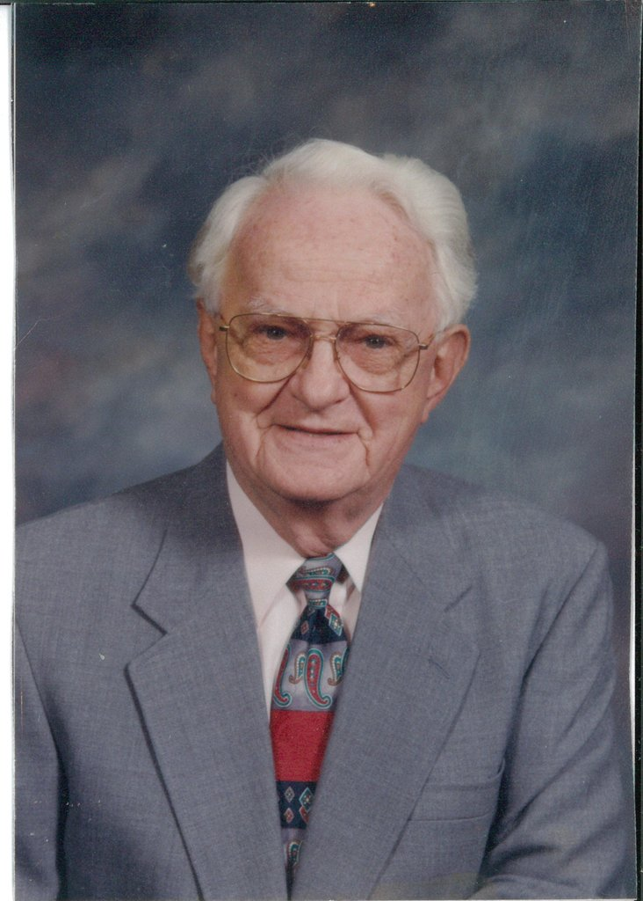

Webpage for Thomas J.Watson Sr Thomas John Watson Sr. (February 17, 1874 -June 19, 1956) was an American businessman who served as the chairman and CEO of IBM.
He oversaw the company's growth into an international force from 1914 to 1956. Watson developed IBM's management style and corporate culture from John Henry Patterson's training at NCR.
He turned the company into a highly effective selling organization, based largely on punched card tabulating machines.
A leading self-made industrialist, he was one of the richest men of his time and was called the world's greatest salesman when he died in 1956.
Life and career.
Thomas J. Watson was born in Campbell, New York, the fifth child and only son of Thomas and Jane Fulton White Watson.
His four older siblings were Jennie, Effie, Loua, and Emma.
His father farmed and owned a modest lumber business located near Painted Post, a few miles west of Corning, in the Southern Tier region of New York.
Thomas worked on the family farm in East Campbell, New York and attended the District School Number Five in the late 1870s.
As Watson entered his teen years he attended Addison Academy In Addison, New York.

Watson received the Silver Buffalo Award from the Boy Scouts of America in 1955 for his service to youth.
He was the national president of the BSA from 1964 to 1968.
His Father International Commissioner in the 1940s.
Watson was inducted into the Junior Achievement U.S. Business Hall of Fame in 1976.
He was awarded the Vermilye Medal in 1967
In 1998 he was included on TIME Magazine's 100 most influential people of the 20th century.